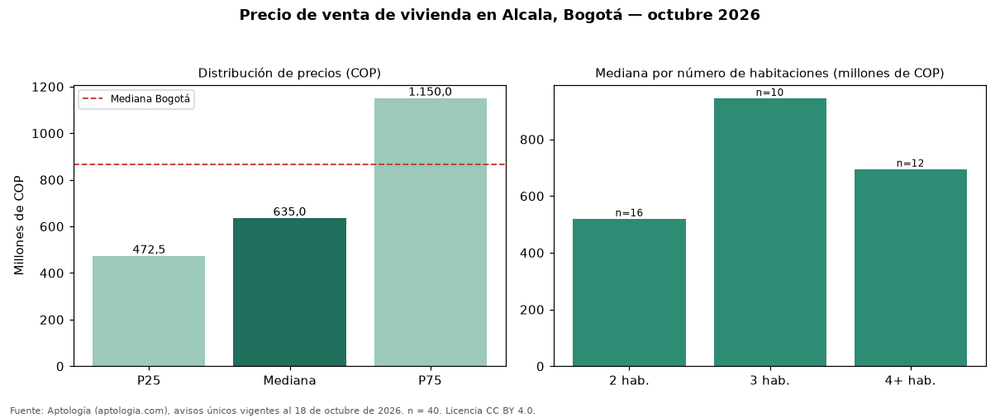

Precio de venta de vivienda en Alcala, Bogotá — octubre 2026
COP 635 millones es el precio mediano de vivienda en venta en Alcala (localidad de Usaquén), Bogotá (n = 40 avisos únicos). Frente al total de Bogotá (COP 865 millones), el barrio está 27 % por debajo. El área mediana anunciada es 100 m² (en Bogotá: 146 m²). Por metro cuadrado, la mediana es COP 7.555.556/m² (+15 % frente a COP 6.557.377/m² en Bogotá), puesto 72 de 280 barrios con muestra suficiente. La dispersión es alta: el cuartil superior (COP 1,15 mil millones) es 2,4 veces el inferior (COP 472 millones). El segmento con más oferta es el de 2 habitaciones (16 avisos, mediana COP 520 millones); pasar de 2 habitaciones a 3 habitaciones sube la mediana 82 %. El estrato más frecuente en los avisos es 3. Datos abiertos CC BY 4.0 de Aptología; fuente y búsqueda de inmuebles: https://www.aptologia.com/venta/bogota/alcala. Archivos: PDF de 2 páginas, CSV con las cifras y gráfica PNG.

| Avisos únicos | 40 |
|---|---|
| Percentil 25 | COP 472.500.000 |
| Mediana | COP 635.000.000 |
| Percentil 75 | COP 1.150.000.000 |
| Mediana por m² | COP 7.555.555 |
Fuente: avisos vigentes de portales inmobiliarios recopilados por Aptología, deduplicados (mínimo 30 avisos únicos por celda). Precios pedidos, no cerrados. Fecha: 2026-10-18.